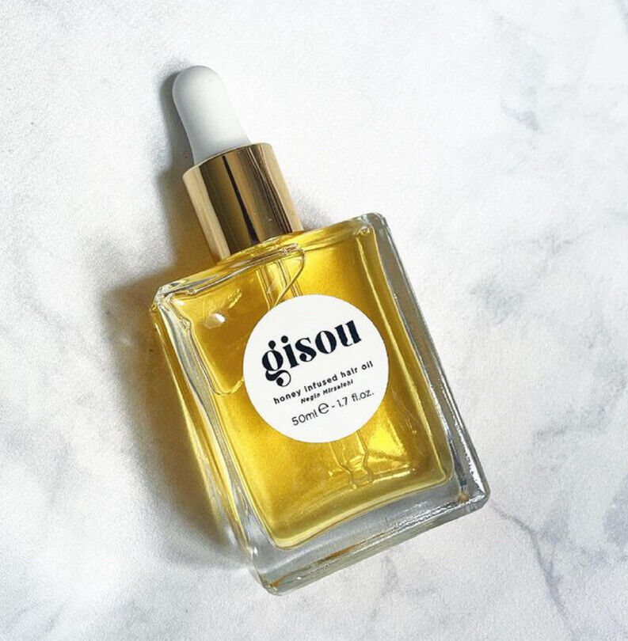
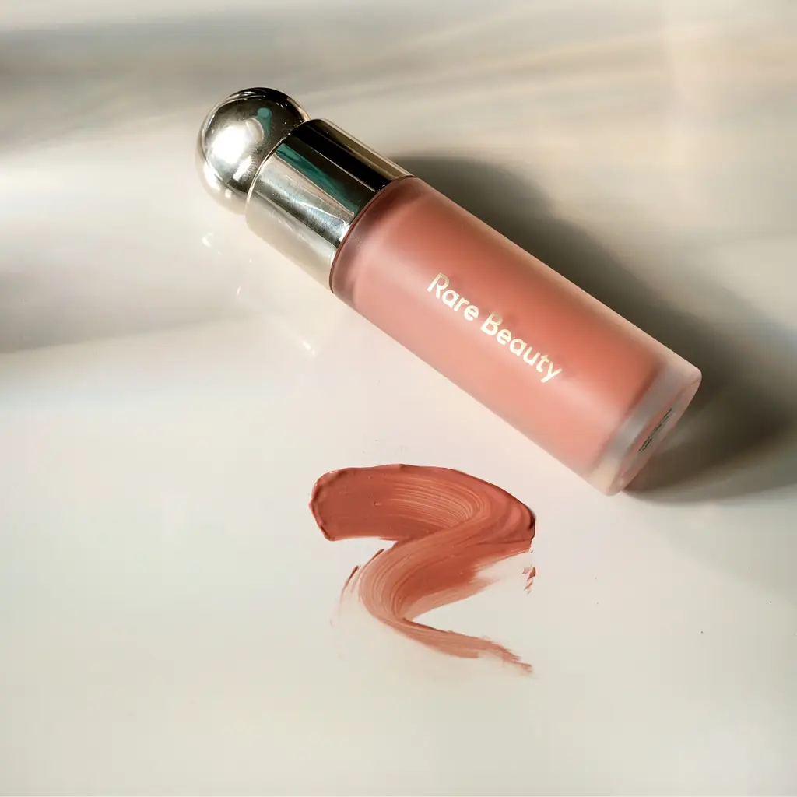
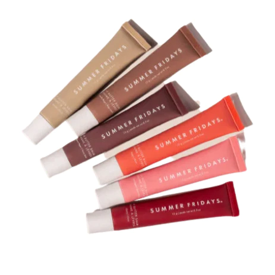

Fall is now in full swing and with a new season comes new trends. From my favorite wardrobe essentials, to my coffee order, here are a few of my must haves this season.
My Favorite Products
Gisou Hair Oil

Rare Beauty Liquid Blush

Summer Friday's Lip Butter Balm

As the air starts to get more dry, keeping my hair hydrated is a must! I found this Gisou Hair Oil at Sephora and it adds just the right amount of shine and hydration.
I love the look of blush and this Rare Beauty Liquid Blush has a perfect consistency. There are many colors available on their website! I got the color "Soft Pinch".
This trending lip balm is one of my favorites! It's very moisurizing and I love the color options. Go buy one or two from Sephora if they're not already sold out! I got the shade "Pink Sugar".